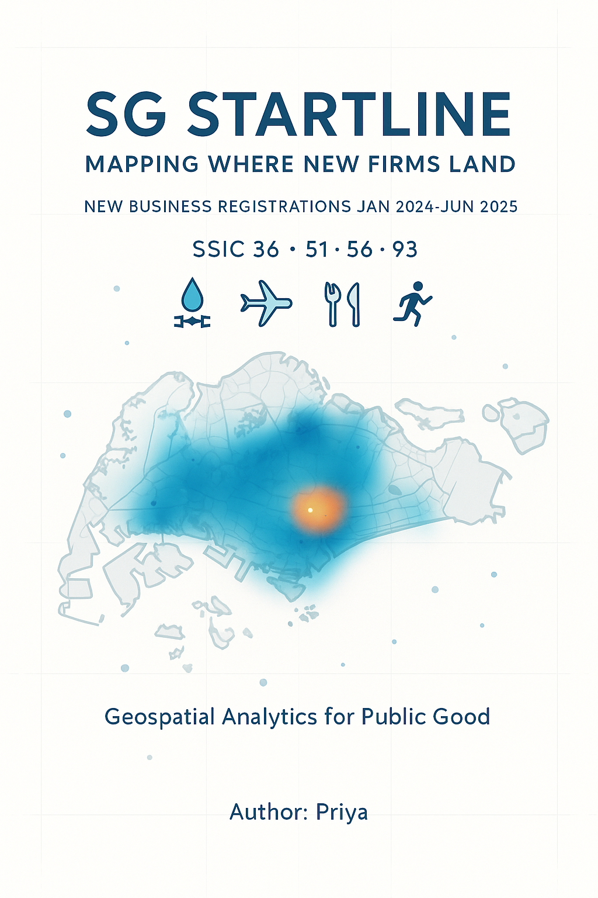
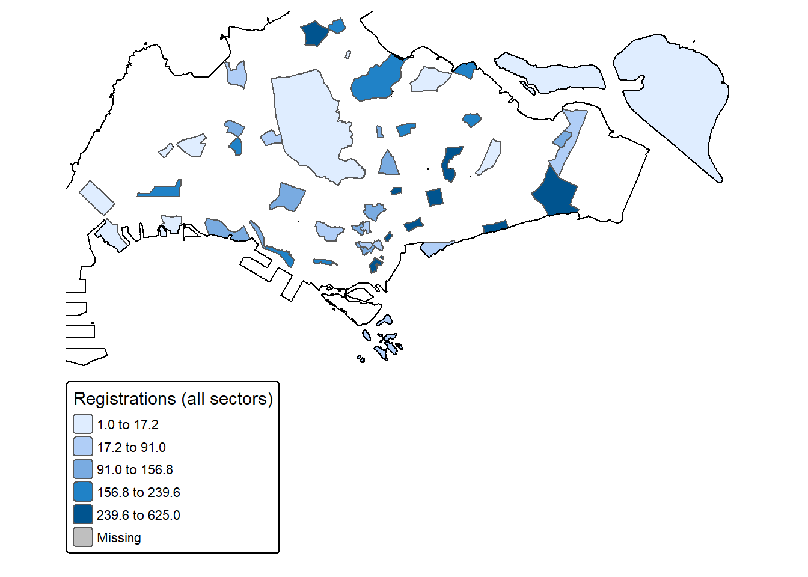
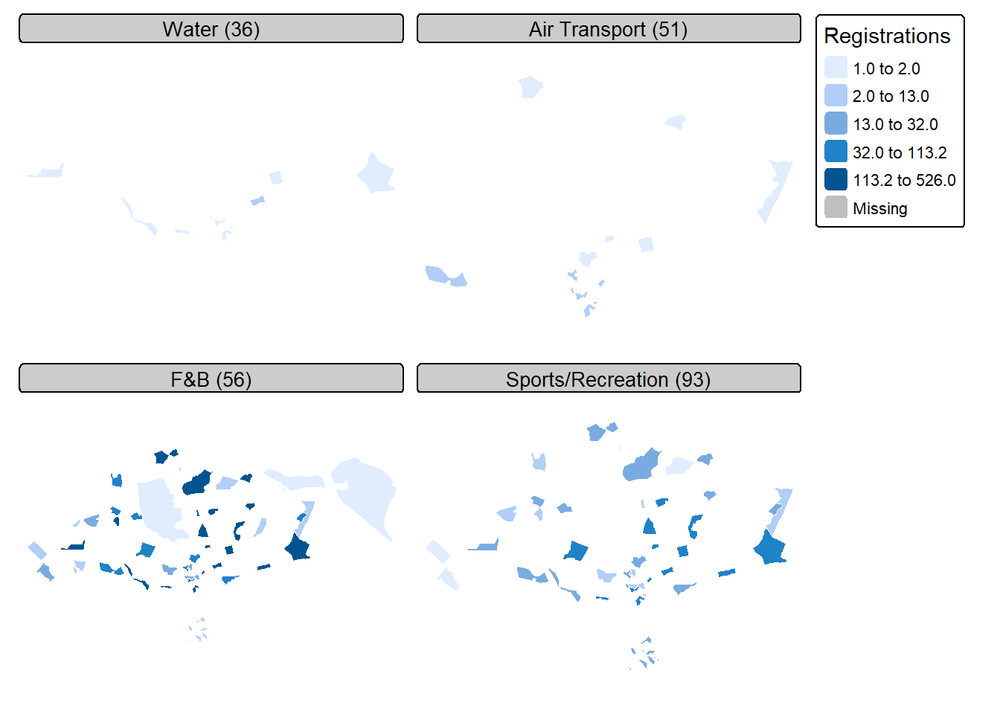
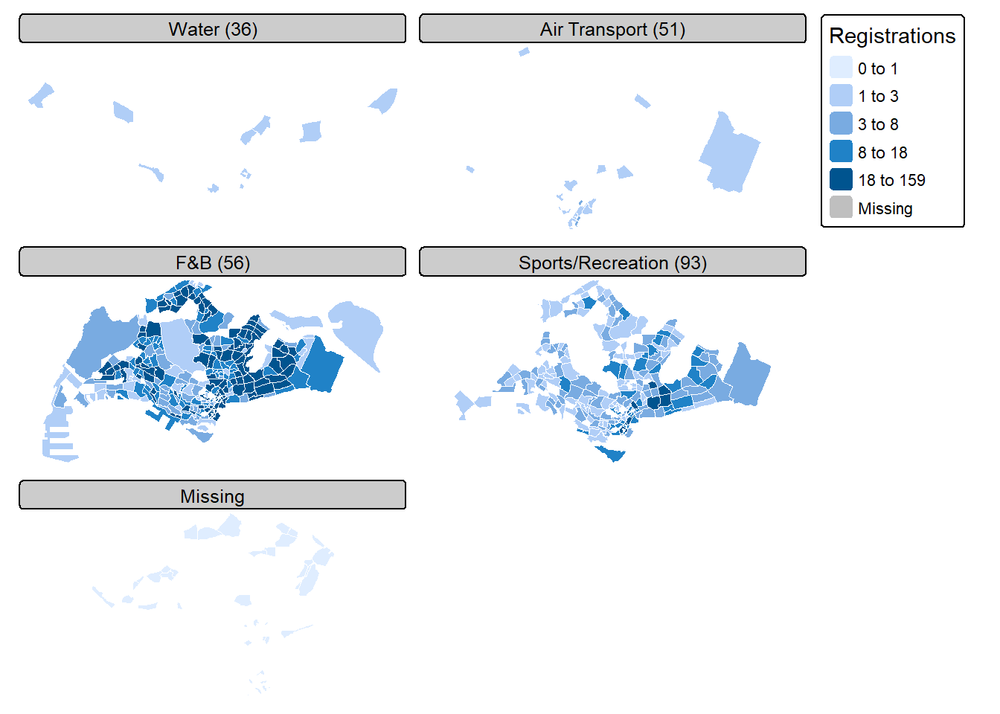
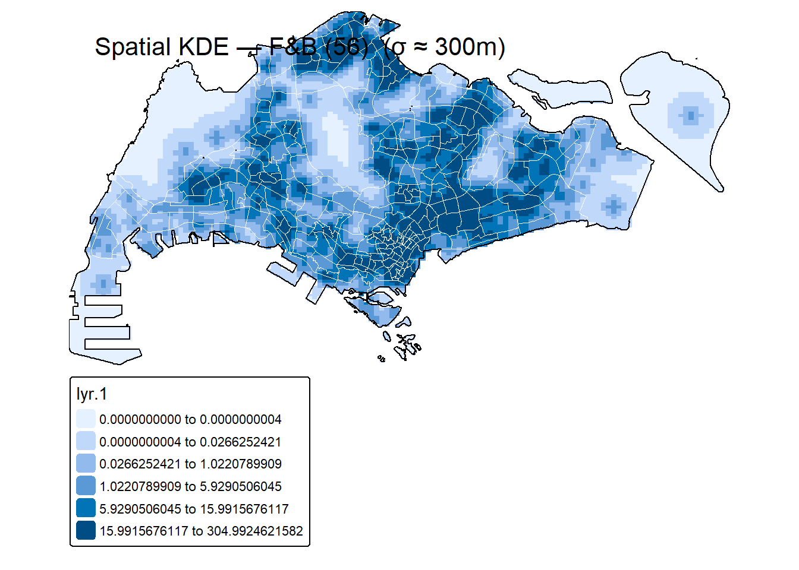
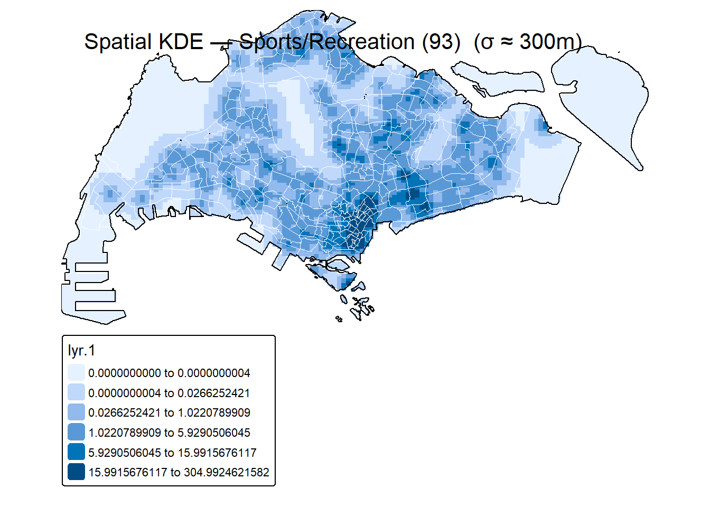
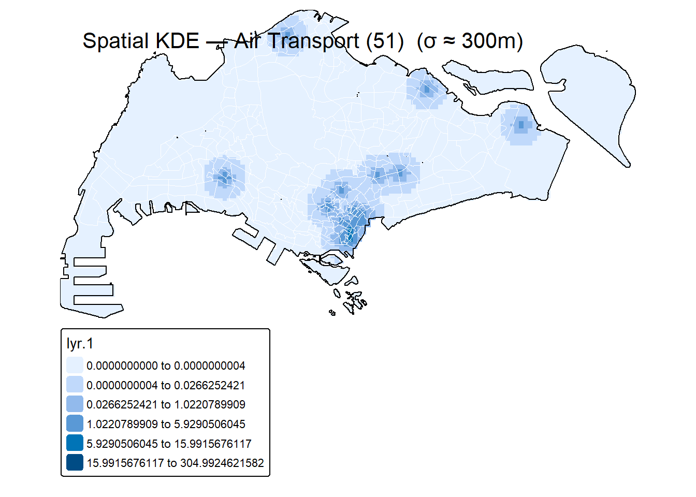
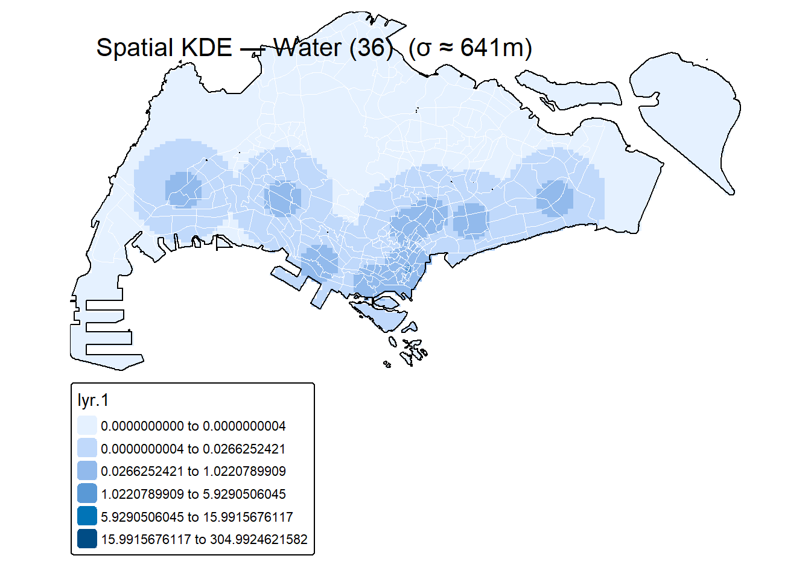

pacman::p_load(sf, sfdep, readr, spatstat, tmap, janitor, purrr, dplyr, lubridate, leaflet, httr2, glue, tidyr, fs, raster, memoise, spNetwork, tidyverse, DT, knitr, kableExtra, gtsummary, stringr)Take home Exercise 1 : Geospatial Analytics for Public Good

1 Overview: SG Startline ~ Mapping Where New Firms Land
Where businesses choose to start is not random, it shapes jobs, footfall, and how a city functions day to day. This study looks at new firm registrations in Singapore from Jan 2024 to Jun 2025, turning raw ACRA records into spatial intelligence that planners and managers can actually use. The lens is both where and when: not just dots on a map, but how those dots pulse over months and concentrate around specific subzones.
I focus on four business types referring to 2-digit Singapore Standard Industrial Classification SSIC divisions with distinct siting logic:
- 36 (Water collection, treatment & supply) where siting is tightly regulated
- 51 (Air transport) tied to aviation and logistics corridors
- 56 (Food & Beverage) driven by footfall and mall ecosystems
- 93 (Sports, amusement & recreation) that clusters around leisure belts and event nodes.
Together they give a balanced read on infrastructure-led, corridor-led, and demand-led location choices.
Methodologically, I convert ACRA records into point features, anchor them to Master Plan 2019 subzones, and analyse in SVY21 (EPSG:3414). I then use monthly maps to see timing, kernel density estimation (KDE) to surface stable hotspots, and second-order diagnostics (Ripley’s K/L and space–time K) to test whether entries genuinely cluster beyond simple density and whether follow-on entries appear shortly after a first mover. Where sample sizes allow, I contrast sectors with relative-risk surfaces to highlight places that favour F&B over recreation (or vice versa).
The goal is practical: Identify stable hotspots vs short-lived flares, read neighbourhood-scale clustering (≈200–600 m), and spot short-run attraction in time (≈1–2 months). The outputs are clean maps with ≤150-word captions and a concise planning note that translates patterns into actions—zoning intensity around transit, modular floorspace in emerging corridors, faster permitting and utilities where KDE pressure rises, and safeguards against displacement in peak subzones.
2 Objective
Key questions we’ll try to answer
SSIC 36 — Water collection, treatment & supply
What it is: Utilities and water services
What we expect: Few but strategic entries near plants/reservoirs or utility corridors; more “infrastructure anchors” than retail-style clusters.
SSIC 51 — Air transport
What it is: Airlines, cargo handlers, ground ops, MRO, freight/forwarding offices.
What we expect: Clear clustering around the airport/airfreight belt and nearby business parks; office addresses close to aviation/logistics access.
SSIC 56 — Food & Beverage service activities
What it is: Cafés, restaurants, kiosks, quick-serve.
What we expect: Strong hotspots at malls, town centres, MRT nodes; month-to-month flares; classic neighbourhood-scale clustering.
SSIC 93 — Sports, amusement & recreation
What it is: Gyms, studios, indoor play, arcades, leisure/event operators.
What we expect: Bands along parks/waterfronts and lifestyle hubs; co-location with F&B; some event-driven spikes.
3 Loading Packages
In this exercise, we will be using the following packages:
| Package | Description |
|---|---|
| sf | For importing, managing, and handling geospatial data |
| spatstat | For point pattern analysis. In this hands-on exercise, it will be used to perform 1st- and 2nd-order spatial point patterns analysis and derive kernel density estimation layer |
| sfdep | Used to compute spatial weights |
| tmap | For thematic mapping |
| leaflet | For interactive maps |
| raster | For raster data manipulation functions |
| spNetwork | For spatial analysis on networks |
| tidyverse | For non-spatial data wrangling |
| DT, knitr, kableExtra | For building tables |
| gtsummary | For publication-ready analyticla and summary tables |
The following code chunk uses p_load() of pacman package to check if the aforementioned packages are installed in the computer. If they are, the libraries will be called into R.
4 The Data
| Dataset Name | Description | Format |
|---|---|---|
| ACRA – Information on Corporate Entities (A–Z, Others) | All entity registrations. Used to extract new businesses by SSIC and date. | CSV (27 files) |
| SSIC 2020 | Singapore Standard Industrial Classification; used to choose business types (2-/3-/5-digit). | |
| OneMap Search API | Geocoding service to convert postal codes to coordinates. | Web API |
Master Plan 2019 is the statutory land use plan that guides Singapore’s development in the medium term over the next 10 to 15 years. It is available as a polygon feature layer in KML format, maintained and published by the Urban Redevelopment Authority (URA)
For this take-home exercise, we’ll be using the ACRA Information on Corporate Entities which is a collection of csv files that provide dataset of registered companies in SIngapore to investigate. We’ll also be using Master Plan 2019 Subzone Boundary (No Sea) for geometry.
We’ll import the Master Plan 2019 Subzone Boundary file.
5 Data Wrangling
5.1 Preparing the Subzone Boundary (KML): why & how
This converts URA’s Master Plan 2019 Subzone (No Sea) KML into a clean, projected GeoPackage with consistent field names. We’ll use it as
(1) the analysis window for point-pattern methods and
(2) the join layer to aggregate new businesses by subzone/planning area.
# KML → clean sf in SVY21 metres (EPSG:3414)
sz_raw_path <- "data/MasterPlan2019SubzoneBoundaryNoSeaKML.kml"
subzones <- st_read(sz_raw_path, quiet = TRUE) %>%
st_zm(drop = TRUE, what = "ZM") %>% # drop Z/M if present
clean_names() %>% # lower_case_names
st_make_valid() %>% # fix small geometry issues
st_transform(3414) # metres for KDE/K-functionsInsight: We now have a valid subzone layer in metres (SVY21 / EPSG:3414). Distance-based methods (KDE, K/L) will be numerically sound, and this layer doubles as our analysis window to control edge effects.
5.2 Standardise key attribute names
(URA KMLs sometimes tuck attributes inside an HTML description field. The helper below pulls values out if they aren’t already columns.)
# Helper: extract a field value from HTML 'description' (if needed)
extract_field <- function(html, key){
if (!"description" %in% names(subzones)) return(rep(NA_character_, nrow(subzones)))
m <- str_match(html, paste0("<th>", key, "</th>\\s*<td>([^<]*)</td>"))
val <- m[, 2]
ifelse(is.na(val) | val == "", NA_character_, str_squish(val))
}
subzones_std <- subzones %>%
mutate(
SUBZONE_NO = coalesce(if ("subzone_no" %in% names(.)) as.integer(subzone_no) else NA_integer_,
suppressWarnings(as.integer(extract_field(description, "SUBZONE_NO")))),
SUBZONE_N = coalesce(if ("subzone_n" %in% names(.)) subzone_n else extract_field(description, "SUBZONE_N")),
SUBZONE_C = coalesce(if ("subzone_c" %in% names(.)) subzone_c else extract_field(description, "SUBZONE_C")),
CA_IND = coalesce(if ("ca_ind" %in% names(.)) ca_ind else extract_field(description, "CA_IND")),
PLN_AREA_N = coalesce(if ("pln_area_n" %in% names(.)) pln_area_n else extract_field(description, "PLN_AREA_N")),
PLN_AREA_C = coalesce(if ("pln_area_c" %in% names(.)) pln_area_c else extract_field(description, "PLN_AREA_C")),
REGION_N = coalesce(if ("region_n" %in% names(.)) region_n else extract_field(description, "REGION_N")),
REGION_C = coalesce(if ("region_c" %in% names(.)) region_c else extract_field(description, "REGION_C")),
FMEL_UPD_D = coalesce(if ("fmel_upd_d" %in% names(.)) fmel_upd_d else extract_field(description, "FMEL_UPD_D"))
) %>%
select(SUBZONE_NO, SUBZONE_N, SUBZONE_C, CA_IND,
PLN_AREA_N, PLN_AREA_C, REGION_N, REGION_C, FMEL_UPD_D, geometry) %>%
st_make_valid() %>%
st_transform(3414)
# Save a clean, fast-to-load copy
st_write(subzones_std, "data/geospatial/mpsz_subzones_2019_nosea.gpkg",
layer = "subzones", delete_dsn = TRUE, quiet = TRUE)Insight: Field names are now harmonised (SUBZONE_N, PLN_AREA_N, REGION_N), so later joins/labels won’t break across KML variants. Saving to GeoPackage avoids re-parsing HTML next time and speeds reloads.
5.3 Import ACRA CSVs (A–Z)
# Where your ACRA CSVs live
aspatial_dir <- "data/aspatial/ACRA"
# Find CSVs (case-insensitive). If none found, stop with a clear message.
file_list <- list.files(aspatial_dir, pattern = "(?i)\\.csv$", full.names = TRUE, recursive = TRUE)
if (length(file_list) == 0) {
stop(paste0(
"No CSVs found in: ", aspatial_dir, "\n",
"→ Put the 27 ACRA A–Z CSV files (or any ACRA CSVs) into this folder."
))
}
# Read and stack; clean names
acra_raw <- file_list |>
purrr::map_dfr(~ readr::read_csv(.x, show_col_types = FALSE)) |>
janitor::clean_names()
# (Optional) quick peek + save checkpoint
utils::head(acra_raw, 3)# A tibble: 3 × 53
uen issuance_agency_id entity_name entity_type_description
<chr> <chr> <chr> <chr>
1 00022100K ACRA A Y ABDUL RAHIMAN Sole Proprietorship/ Par…
2 00031800X ACRA A M ABDULLAH SAHIB & CO Sole Proprietorship/ Par…
3 00043100A ACRA ANN LEE YUEN Sole Proprietorship/ Par…
# ℹ 49 more variables: business_constitution_description <chr>,
# company_type_description <chr>, paf_constitution_description <chr>,
# entity_status_description <chr>, registration_incorporation_date <date>,
# uen_issue_date <date>, address_type <chr>, block <chr>, street_name <chr>,
# level_no <chr>, unit_no <chr>, building_name <chr>, postal_code <chr>,
# other_address_line1 <chr>, other_address_line2 <chr>,
# account_due_date <chr>, annual_return_date <chr>, …saveRDS(acra_raw, "data/rds/acra_raw.rds")Insight: acra_raw now holds all A–Z files combined with clean column names. Ready for filtering, SSIC parsing and date cleanup.
5.4 Load & Tidy ACRA (filter to study window + our 4 divisions)
# Tidy dates, SSIC, postal; derive time fields; filter study window (2024-01-01 to 2025-06-30)
acra_tidy <- acra_raw |>
mutate(
# robust parse in case formats vary
reg_date = lubridate::as_date(
lubridate::parse_date_time(registration_incorporation_date, orders = c("ymd","dmy","mdy"))
),
year = lubridate::year(reg_date),
month_num = lubridate::month(reg_date),
# avoid month() masking: use format() for a factor month label
month = factor(format(reg_date, "%b"), levels = month.abb, ordered = TRUE),
# keep only digits in postal_code; left-pad to 6
postal_code = postal_code |>
stringr::str_replace_all("[^0-9]", "") |>
stringr::str_pad(width = 6, side = "left", pad = "0"),
# normalise SSIC digits; derive 2-/3-digit prefixes
primary_ssic_code = stringr::str_replace_all(primary_ssic_code, "[^0-9]", ""),
ssic2 = stringr::str_sub(primary_ssic_code, 1, 2),
ssic3 = stringr::str_sub(primary_ssic_code, 1, 3),
# monthly index
ym = as.Date(paste0(format(reg_date, "%Y-%m"), "-01"))
) |>
filter(!is.na(reg_date),
reg_date >= as.Date("2024-01-01"),
reg_date <= as.Date("2025-06-30")) |>
filter(!is.na(postal_code), postal_code != "000000") |>
filter(ssic2 %in% c("36","51","56","93")) |>
distinct(uen, .keep_all = TRUE)
# (Optional) Save a tidy checkpoint
readr::write_rds(acra_tidy, file.path("data/rds", "acra_tidy_2024_2025_ssic36_51_56_93.rds"))Insight: ACRA is now analysis-ready: clean dates, SSIC prefixes (ssic2/ssic3), proper 6-digit postcodes, Jan 2024–Jun 2025 filter, and only our four divisions. Keeping one row per UEN prevents double-counting.
# Confirm month labels look right and ordered
acra_tidy |>
count(month) |>
arrange(month) |> print(n = 12)# A tibble: 12 × 2
month n
<ord> <int>
1 Jan 795
2 Feb 711
3 Mar 817
4 Apr 854
5 May 797
6 Jun 752
7 Jul 449
8 Aug 456
9 Oct 431
10 Nov 344
11 Dec 261
12 <NA> 399# Confirm only the four divisions
acra_tidy |>
count(ssic2)# A tibble: 4 × 2
ssic2 n
<chr> <int>
1 36 12
2 51 31
3 56 5758
4 93 1265Insight: month is an ordered factor (Jan→Dec), so timelines won’t scramble; ssic2 shows only 36/51/56/93, confirming the sector filter is applied correctly.
5.5 Select the 4 SSIC divisions (our study)
What this does: attaches readable labels to 36/51/56/93, filters the cleaned ACRA
# Four divisions for this project
targets <- tibble::tibble(
ssic2 = c("36","51","56","93"),
sector = factor(c(
"Water (36)",
"Air Transport (51)",
"F&B (56)",
"Sports/Recreation (93)"
), levels = c("Water (36)","Air Transport (51)","F&B (56)","Sports/Recreation (93)"))
)
biz_sel <- acra_tidy |>
dplyr::filter(ssic2 %in% targets$ssic2) |>
dplyr::left_join(targets, by = "ssic2")
# quick sample-size check across years in the window
biz_sel |>
dplyr::count(sector, year, name = "n") |>
dplyr::arrange(sector, year)# A tibble: 8 × 3
sector year n
<fct> <dbl> <int>
1 Water (36) 2024 7
2 Water (36) 2025 5
3 Air Transport (51) 2024 20
4 Air Transport (51) 2025 11
5 F&B (56) 2024 3793
6 F&B (56) 2025 1965
7 Sports/Recreation (93) 2024 840
8 Sports/Recreation (93) 2025 4255.6 Geocoding (OneMap: postal → lat/lon)
# 1) Try to read precomputed tidy file
tidy_rds <- "data/rds/acra_tidy_2024_2025_ssic36_51_56_93.rds"
if (!exists("acra_tidy")) {
if (file.exists(tidy_rds)) {
message("Loading precomputed `acra_tidy` from RDS...")
acra_tidy <- readr::read_rds(tidy_rds)
} else {
message("No `acra_tidy` RDS found. Importing ACRA CSVs and building `acra_tidy`...")
# --- Import ACRA CSVs (A–Z) ---
aspatial_dir <- "data/aspatial/ACRA"
file_list <- list.files(aspatial_dir, pattern = "(?i)\\.csv$", full.names = TRUE, recursive = TRUE)
if (length(file_list) == 0) {
stop(paste0("No CSVs found in: ", aspatial_dir, "\nPut the ACRA CSVs there, then re-render."))
}
acra_raw <- file_list |>
purrr::map_dfr(~ readr::read_csv(.x, show_col_types = FALSE)) |>
janitor::clean_names()
# --- Build `acra_tidy` exactly as used elsewhere ---
acra_tidy <- acra_raw |>
mutate(
reg_date = lubridate::as_date(
lubridate::parse_date_time(registration_incorporation_date, orders = c("ymd","dmy","mdy"))
),
year = lubridate::year(reg_date),
month_num = lubridate::month(reg_date),
month = factor(format(reg_date, "%b"), levels = month.abb, ordered = TRUE),
postal_code = postal_code |>
stringr::str_replace_all("[^0-9]", "") |>
stringr::str_pad(width = 6, side = "left", pad = "0"),
primary_ssic_code = stringr::str_replace_all(primary_ssic_code, "[^0-9]", ""),
ssic2 = stringr::str_sub(primary_ssic_code, 1, 2),
ssic3 = stringr::str_sub(primary_ssic_code, 1, 3),
ym = as.Date(paste0(format(reg_date, "%Y-%m"), "-01"))
) |>
filter(!is.na(reg_date),
reg_date >= as.Date("2024-01-01"),
reg_date <= as.Date("2025-06-30")) |>
filter(!is.na(postal_code), postal_code != "000000") |>
filter(ssic2 %in% c("36","51","56","93")) |>
distinct(uen, .keep_all = TRUE)
# Save for next runs
dir.create("data/rds", showWarnings = FALSE, recursive = TRUE)
readr::write_rds(acra_tidy, tidy_rds)
}
}
# Tiny check so you see totals before geocoding:
acra_tidy |> count(ssic2, name = "n")# A tibble: 4 × 2
ssic2 n
<chr> <int>
1 36 12
2 51 31
3 56 5758
4 93 1265# OneMap postal -> lat/lon (fast, single-block, cache-first) — FIXED [[1]] bug
library(httr2); library(dplyr); library(purrr); library(tibble); library(stringr); library(readr)
`%||%` <- function(x,y) if (is.null(x) || length(x)==0 || all(is.na(x))) y else x
.get1 <- function(x, nm) { # safe extractor for df/list
if (is.data.frame(x)) { if (nm %in% names(x)) x[[nm]][1] else NULL }
else if (is.list(x)) x[[nm]] else NULL
}
geocode_one <- function(postal, tries = 3) {
if (is.na(postal) || !grepl("^\\d{6}$", postal))
return(tibble(postal_code = postal, lat = NA_real_, lon = NA_real_))
call_once <- function(base, path, q) {
req <- request(base) |> req_url_path_append(path) |> req_url_query(!!!q) |> req_timeout(15) |> req_user_agent("ACRA-Geocoder/1.0 (+R httr2)")
resp <- try(req_perform(req), silent = TRUE); if (inherits(resp, "try-error") || resp_status(resp) >= 400) return(NULL)
js <- try(resp_body_json(resp, simplifyVector = TRUE), silent = TRUE); if (inherits(js, "try-error") || is.null(js$results) || length(js$results)==0) return(NULL)
res <- js$results
r <- if (is.data.frame(res)) res[1, , drop = FALSE] else res[[1]]
if (is.atomic(r)) r <- as.list(r) # guard weird atomic result
tibble(
postal_code = .get1(r, "POSTAL") %||% postal,
lat = suppressWarnings(as.numeric(.get1(r, "LATITUDE") %||% .get1(r, "Y"))),
lon = suppressWarnings(as.numeric(.get1(r, "LONGITUDE") %||% .get1(r, "X")))
)
}
q <- list(searchVal = postal, returnGeom = "Y", getAddrDetails = "Y", pageNum = "1")
for (i in seq_len(tries)) {
res <- call_once("https://developers.onemap.sg", "commonapi/search", q); if (!is.null(res)) return(res)
res <- call_once("https://www.onemap.gov.sg", "api/common/elastic/search", q); if (!is.null(res)) return(res)
if (i < tries) Sys.sleep(0.4 * i) # only backoff on repeated failure
}
tibble(postal_code = postal, lat = NA_real_, lon = NA_real_)
}
stopifnot(exists("acra_tidy"))
cache_path <- "data/rds/geocache_postal.rds"
dir.create(dirname(cache_path), recursive = TRUE, showWarnings = FALSE)
cache <- if (file.exists(cache_path)) readRDS(cache_path) else tibble(postal_code = character(), lat = double(), lon = double())
valid <- acra_tidy$postal_code[str_detect(acra_tidy$postal_code, "^\\d{6}$")]
todo <- setdiff(unique(valid), cache$postal_code)
new_rows <- if (length(todo)) map_dfr(todo, geocode_one) else tibble(postal_code = character(), lat = double(), lon = double())
geoc_tbl <- bind_rows(cache, new_rows) |> distinct(postal_code, .keep_all = TRUE)
saveRDS(geoc_tbl, cache_path)
acra_geo <- left_join(acra_tidy, geoc_tbl, by = "postal_code")
geocode_qc <- acra_geo |>
summarise(n_total = n(), n_geocoded = sum(!is.na(lat) & !is.na(lon)), success_pct = round(100 * n_geocoded / n_total, 1))
print(geocode_qc)# A tibble: 1 × 3
n_total n_geocoded success_pct
<int> <int> <dbl>
1 7066 7064 100dir.create("data/derived", recursive = TRUE, showWarnings = FALSE)
dir.create("data/rds", recursive = TRUE, showWarnings = FALSE)
write_csv(acra_geo, "data/derived/acra_geocoded_2024_2025.csv")
saveRDS(acra_geo, "data/rds/acra_geocoded_2024_2025.rds")Insight: Postal codes are now coordinates (WGS84 lat/lon). Any row that still can’t geocode keeps NA so we can measure success before dropping it for maps.
5.7 Build map-ready points → clip → tag subzones
# --- Points in metres + subzone tags ---
stopifnot(exists("acra_geo"))
# If you didn't keep subzones_std in memory, reload your clean GPKG:
if (!exists("subzones_std")) {
subzones_std <- sf::st_read("data/geospatial/mpsz_subzones_2019_nosea.gpkg",
layer = "subzones", quiet = TRUE)
}
library(sf); library(dplyr)
# Keep only geocoded rows
acra_geo_ok <- acra_geo |> filter(!is.na(lat), !is.na(lon))
# WGS84 points → SVY21 (EPSG:3414) in metres
pts_wgs <- st_as_sf(acra_geo_ok, coords = c("lon","lat"), crs = 4326, remove = FALSE)
pts_3414 <- st_transform(pts_wgs, 3414)
# Build analysis window (union of subzones) & clip
subzones_std_3414 <- st_transform(subzones_std, 3414)
sg_window <- st_union(subzones_std_3414)
pts_3414 <- st_intersection(pts_3414, sg_window)
# Join subzone / planning area labels
pts_ready <- st_join(
pts_3414,
subzones_std_3414[, c("SUBZONE_N","PLN_AREA_N","REGION_N")],
left = TRUE
) |>
select(
uen, entity_name, reg_date, ym, ssic2, ssic3, postal_code,
SUBZONE_N, PLN_AREA_N, REGION_N, geometry
)
# Save for reuse
dir.create("data/geospatial", showWarnings = FALSE, recursive = TRUE)
dir.create("data/rds", showWarnings = FALSE, recursive = TRUE)
st_write(pts_ready, "data/geospatial/acra_points_2024_2025.gpkg",
layer = "points", delete_dsn = TRUE, quiet = TRUE)
saveRDS(pts_ready, "data/rds/acra_points_2024_2025.rds")Insight: Rows are now SVY21 points in metres, safely inside the MP2019 window, and each record carries SUBZONE/PLANNING AREA labels. This is the backbone for dot maps, KDE, and subzone scoreboards.
5.8 QA: coverage, CRS, sector counts
# Share of geocoded rows that landed inside the subzone window
inside_share <- nrow(pts_ready) / nrow(pts_3414)
inside_share[1] 1# CRS must be 3414
sf::st_crs(pts_ready)$epsg[1] 3414# Any missing labels?
sum(is.na(pts_ready$SUBZONE_N))[1] 0sum(is.na(pts_ready$PLN_AREA_N))[1] 0# Only our four divisions?
pts_ready |>
sf::st_drop_geometry() |>
dplyr::count(ssic2, name = "n") |>
dplyr::arrange(dplyr::desc(n))# A tibble: 4 × 2
ssic2 n
<chr> <int>
1 56 5756
2 93 1265
3 51 31
4 36 12Insight: inside_share should be ~1 and EPSG should read 3414. Near-zero missing subzone labels means your join worked and you can trust subzone aggregations.
6 Starter EDA: monthly inflow & top planning areas
# Monthly counts by sector (for quick timeline charts later)
by_month <- pts_ready |>
sf::st_drop_geometry() |>
count(ssic2, ym, name = "n") |>
arrange(ssic2, ym)
by_month# A tibble: 62 × 3
ssic2 ym n
<chr> <date> <int>
1 36 2024-03-01 1
2 36 2024-05-01 1
3 36 2024-06-01 3
4 36 2024-10-01 1
5 36 2024-12-01 1
6 36 2025-02-01 1
7 36 2025-03-01 1
8 36 2025-04-01 1
9 36 2025-06-01 2
10 51 2024-01-01 2
# ℹ 52 more rows# Top Planning Areas per sector (Top 10)
top_pa <- pts_ready |>
sf::st_drop_geometry() |>
count(ssic2, PLN_AREA_N, name = "n") |>
group_by(ssic2) |>
slice_max(n, n = 10, with_ties = FALSE) |>
ungroup()
top_pa# A tibble: 40 × 3
ssic2 PLN_AREA_N n
<chr> <chr> <int>
1 36 DOWNTOWN CORE 2
2 36 KALLANG 2
3 36 BUKIT MERAH 1
4 36 CLEMENTI 1
5 36 GEYLANG 1
6 36 JURONG WEST 1
7 36 OUTRAM 1
8 36 QUEENSTOWN 1
9 36 SINGAPORE RIVER 1
10 36 TAMPINES 1
# ℹ 30 more rowsInsight: This shows when each sector peaked and where concentrations are strongest (planning areas). Perfect for captions and to prioritise follow-up maps.
7 Choropleth: Counts by Planning Area (all four SSIC divisions)
A baseline picture of where new firms land at the planning-area level (Jan 2024–Jun 2025), using your four divisions: 36, 51, 56, 93. Darker areas = more registrations.
# --- Inputs expected: pts_ready (points in EPSG:3414 with PLN_AREA_N), subzones_std or _3414 ---
# Use the projected subzones (build if missing)
if (!exists("subzones_std_3414")) {
stopifnot(exists("subzones_std"))
subzones_std_3414 <- sf::st_transform(subzones_std, 3414)
}
# Keep planning areas that actually have registrations
keep_pa <- pts_ready |>
sf::st_drop_geometry() |>
dplyr::count(PLN_AREA_N, name = "n") |>
dplyr::filter(n > 0) |>
dplyr::pull(PLN_AREA_N)
subzones_use <- subzones_std_3414 |>
dplyr::filter(PLN_AREA_N %in% keep_pa)
# Optionally exclude offshore islands:
# dplyr::filter(PLN_AREA_N != "NORTH-EASTERN ISLANDS")
# Planning-area counts (all four sectors combined)
pa_counts_all <- pts_ready |>
sf::st_drop_geometry() |>
dplyr::count(PLN_AREA_N, name = "n_all")
# Join counts → polygons
subzones_pa <- subzones_use |>
dplyr::distinct(PLN_AREA_N, .keep_all = TRUE) |>
dplyr::left_join(pa_counts_all, by = "PLN_AREA_N")
# Single outline (nice bold border)
sg_outline <- subzones_use |>
sf::st_union() |>
sf::st_make_valid() |>
sf::st_as_sf() |>
dplyr::mutate(name = "Singapore")
tmap::tmap_mode("plot")
tmap::tm_shape(subzones_pa) +
tmap::tm_polygons(
col = "n_all",
title = "Registrations (all sectors)",
style = "quantile", n = 5,
border.col = "grey35", border.lwd = 0.6
) +
tmap::tm_shape(sg_outline) +
tmap::tm_borders(col = "black", lwd = 1.2) +
tmap::tm_layout(frame = FALSE)
Insight
Darker shades flag high-activity planning areas (CBD/mixed-use nodes, airport/logistics belts, town-centre corridors).
Use this as a baseline surface before diving into sector-specific intensity (KDE) and clustering diagnostics (Ripley’s K/L).
8 Choropleth: Counts by Planning Area × Sector (faceted)
The same planning-area map but split by sector to reveal different siting logics: infrastructure-led (36), corridor-led (51), demand-led (56/93).
# Label map for facets
ssic_label <- c(
`36` = "Water (36)",
`51` = "Air Transport (51)",
`56` = "F&B (56)",
`93` = "Sports/Recreation (93)"
)
# Planning-area counts by sector
pa_counts_sector <- pts_ready |>
sf::st_drop_geometry() |>
dplyr::count(PLN_AREA_N, ssic2, name = "n") |>
dplyr::mutate(sector = factor(ssic_label[ssic2], levels = ssic_label))
# Join to polygons; fill missing combos with 0 (so facets are comparable)
subzones_pa_sector <- subzones_use |>
dplyr::distinct(PLN_AREA_N, .keep_all = TRUE) |>
dplyr::left_join(pa_counts_sector, by = "PLN_AREA_N") |>
dplyr::mutate(n = tidyr::replace_na(n, 0))
tmap::tm_shape(subzones_pa_sector) +
tmap::tm_polygons(
col = "n",
title = "Registrations",
style = "quantile", n = 5,
border.col = "white"
) +
tmap::tm_facets(by = "sector", ncol = 2, free.scales = FALSE) +
tmap::tm_layout(frame = FALSE, legend.outside = TRUE)
Insight
Water (36): sparse, strategic planning areas (infrastructure anchors).
Air Transport (51): east-side skew near airport/logistics.
F&B (56): strong island-wide presence around malls/MRT nodes.
Sports/Recreation (93): leisure belts (parks/waterfronts) and lifestyle hubs.
9 Choropleth: Counts by Subzone × Sector (finer grain)
A subzone-level choropleth (finer than planning areas), faceted by sector. Best for seeing micro-clusters within large planning areas.
# Subzone counts by sector
sz_counts_sector <- pts_ready |>
sf::st_drop_geometry() |>
dplyr::count(SUBZONE_N, ssic2, name = "n") |>
dplyr::mutate(sector = factor(ssic_label[ssic2], levels = ssic_label))
# Join; keep only subzones we analyse
subzones_sz <- subzones_use |>
dplyr::select(SUBZONE_N, PLN_AREA_N, geometry)
subzones_sz_sector <- subzones_sz |>
dplyr::left_join(sz_counts_sector, by = "SUBZONE_N") |>
dplyr::mutate(n = tidyr::replace_na(n, 0))
tmap::tm_shape(subzones_sz_sector) +
tmap::tm_polygons(
col = "n",
title = "Registrations",
style = "quantile", n = 5,
border.col = "white"
) +
tmap::tm_facets(by = "sector", ncol = 2, free.scales = FALSE) +
tmap::tm_layout(frame = FALSE, legend.outside = TRUE)
Insight
Subzones surface within-area peaks (e.g., a single town centre driving the planning-area total).
Use these maps to short-list KDE hotspots and to target permits/utilities at the right subzone scale.
10 First-Order Setup, Build Window & ppp Converters
We convert our study area into a polygonal window (owin) and provide helpers to turn sector subsets into ppp objects that spatstat uses for tests and KDE.
# one-liner fix
biz_pts_use <- pts_ready# Window (country outline) from your filtered subzones — in SVY21 metres
library(sf); library(spatstat.geom)
stopifnot(exists("subzones_use"), exists("biz_pts_use"))
W <- spatstat.geom::as.owin(sf::st_union(subzones_use)) # EPSG:3414 metres
# Helper: convert an sf points subset to ppp in window W
to_ppp <- function(pts_sf, window = W) {
xy <- sf::st_coordinates(pts_sf)
spatstat.geom::ppp(x = xy[,1], y = xy[,2], window = window, check = FALSE)
}
# Sector labels we’re using in this project (must match your earlier “sector” values)
sectors4 <- c("Water (36)", "Air Transport (51)", "F&B (56)", "Sports/Recreation (93)")Insight All spatial analyses now run in metres (SVY21). This ensures distance-based quantities (nearest neighbour, KDE bandwidths) are numerically meaningful and edge-corrected by the true study window
10.1 Clark–Evans Nearest-Neighbour Test (per sector)
Clark–Evans tests whether registrations are random (CSR), clustered (R<1), or regular (R>1). We report both asymptotic and Monte-Carlo results. For small-n sectors (e.g., 36 and 51), we guard against underpowered tests.
library(dplyr); library(sf); library(stringr)
# ---- 1) Points sf with a 'sector' column ----
ssic_label <- c(`36`="Water (36)", `51`="Air Transport (51)",
`56`="F&B (56)", `93`="Sports/Recreation (93)")
sectors4 <- c("Water (36)","Air Transport (51)","F&B (56)","Sports/Recreation (93)")
# Start from pts_ready if available; otherwise derive from acra_geo lon/lat
if (!exists("biz_pts_use")) {
if (exists("pts_ready")) {
biz_pts_use <- pts_ready
} else if (exists("acra_geo") && all(c("lon","lat") %in% names(acra_geo))) {
biz_pts_use <- st_as_sf(acra_geo, coords = c("lon","lat"), crs = 4326, remove = FALSE)
} else {
stop("Need pts_ready (sf points) or acra_geo with lon/lat to build biz_pts_use.")
}
}
# Ensure CRS = 3414 (SVY21 metres)
if (is.na(sf::st_crs(biz_pts_use))) sf::st_crs(biz_pts_use) <- 3414
if (sf::st_crs(biz_pts_use)$epsg != 3414) biz_pts_use <- sf::st_transform(biz_pts_use, 3414)
# Ensure we can derive ssic2, then sector
if (!"ssic2" %in% names(biz_pts_use)) {
if ("primary_ssic_code" %in% names(biz_pts_use)) {
biz_pts_use <- biz_pts_use %>% mutate(ssic2 = stringr::str_sub(primary_ssic_code, 1, 2))
} else {
stop("Need 'ssic2' or 'primary_ssic_code' to compute sectors.")
}
}
biz_pts_use <- biz_pts_use %>%
mutate(sector = factor(ssic_label[ssic2], levels = sectors4)) %>%
filter(!is.na(sector), sector %in% sectors4)
# Quick sanity check
print(table(biz_pts_use$sector))
Water (36) Air Transport (51) F&B (56)
12 31 5756
Sports/Recreation (93)
1265 # ---- 2) Spatstat window + helper ----
if (sf::st_crs(subzones_use)$epsg != 3414) subzones_use <- sf::st_transform(subzones_use, 3414)
W <- spatstat.geom::as.owin(sf::st_union(subzones_use))
to_ppp <- function(pts_sf, window = W) {
xy <- sf::st_coordinates(pts_sf)
spatstat.geom::ppp(x = xy[,1], y = xy[,2], window = window, check = FALSE)
}library(purrr); library(spatstat.explore); library(dplyr)
ce_one <- function(df, sector_label, nsim = 999L) {
sub <- df %>% dplyr::filter(.data$sector == sector_label)
if (nrow(sub) < 10) {
return(tibble(sector = sector_label, n = nrow(sub),
R = NA_real_, p_value = NA_real_, method = "Skipped (n<10)"))
}
X <- to_ppp(sub)
z_asym <- spatstat.explore::clarkevans.test(
X, correction = "none", clipregion = W, alternative = "clustered"
)
z_mc <- spatstat.explore::clarkevans.test(
X, correction = "none", clipregion = W, alternative = "clustered",
method = "MonteCarlo", nsim = nsim
)
dplyr::bind_rows(
tibble(sector = sector_label, n = X$n,
R = unname(z_asym$statistic), p_value = z_asym$p.value,
method = "Asymptotic"),
tibble(sector = sector_label, n = X$n,
R = unname(z_mc$statistic), p_value = z_mc$p.value,
method = sprintf("Monte Carlo (%d sims)", nsim))
)
}
set.seed(42)
ce_results <- purrr::map_dfr(sectors4, ~ ce_one(biz_pts_use, .x, nsim = 999L))
ce_results# A tibble: 8 × 5
sector n R p_value method
<chr> <int> <dbl> <dbl> <chr>
1 Water (36) 12 0.813 0.107 Asymptotic
2 Water (36) 12 0.813 0.037 Monte Carlo (999 sims)
3 Air Transport (51) 31 0.589 0.00000587 Asymptotic
4 Air Transport (51) 31 0.589 0.001 Monte Carlo (999 sims)
5 F&B (56) 5756 0.353 0 Asymptotic
6 F&B (56) 5756 0.353 0.001 Monte Carlo (999 sims)
7 Sports/Recreation (93) 1265 0.412 0 Asymptotic
8 Sports/Recreation (93) 1265 0.412 0.001 Monte Carlo (999 sims)Insight Expect R < 1 (clustering) for F&B (56) and often Sports/Recreation (93)—these sectors gravitate to footfall and amenity belts. Air (51) and Water (36) usually have few, strategic points; if n < 10, the test is skipped to avoid spurious inference. Use these results as a green light for KDE and for checking that clustering isn’t only a visual illusion.
11 Spatial KDE — Reusable Helpers (one call per sector)
KDE turns points into a smooth intensity surface (registrations per km²). We estimate bandwidth via Diggle with clamps for stability and cache results. We’ll first compute F&B (56) and derive fixed breaks; then reuse the same breaks for all other sectors so maps are comparably scaled.
# Shared helpers for KDE (cache-friendly), breaks, and plotting
library(terra); library(classInt); library(tmap)
rds_dir <- "data/rds"
rasters_dir <- "data/rasters"
dir.create(rds_dir, showWarnings = FALSE, recursive = TRUE)
dir.create(rasters_dir, showWarnings = FALSE, recursive = TRUE)
bw_clamp <- c(300, 800) # metres
# Build ppp for a sector
ppp_for <- function(sec) {
s <- dplyr::filter(biz_pts_use, sector == sec)
xy <- sf::st_coordinates(s)
spatstat.geom::ppp(xy[,1], xy[,2], window = W, check = FALSE)
}
# Compute or load KDE for a sector; return SpatRaster in registrations per km^2
kde_sector <- function(sec) {
key <- gsub("\\W","_", sec)
im_rds <- file.path(rds_dir, paste0("kde_", key, "_im.rds"))
bw_rds <- file.path(rds_dir, paste0("kde_", key, "_bw.rds"))
tif <- file.path(rasters_dir, paste0("kde_", key, "_per_km2.tif"))
# load or compute
if (file.exists(tif)) {
r <- terra::rast(tif)
bw <- if (file.exists(bw_rds)) readRDS(bw_rds) else NA_real_
return(list(r = r, bw = bw))
}
X <- ppp_for(sec)
if (X$n < 5) return(list(r = NULL, bw = NA_real_)) # too small to map safely
h <- tryCatch(spatstat.explore::bw.diggle(X), error = function(e) 400)
bw <- pmin(pmax(as.numeric(h), bw_clamp[1]), bw_clamp[2])
im <- spatstat.explore::density.ppp(X, sigma = bw, edge = TRUE, kernel = "gaussian")
r <- terra::rast(im * 1e6) # per m^2 -> per km^2
terra::crs(r) <- "EPSG:3414"
# clean small negatives
vals <- pmax(terra::values(r, mat = FALSE), 0)
terra::values(r) <- vals
# write once
terra::writeRaster(r, tif, overwrite = TRUE)
saveRDS(im, im_rds); saveRDS(bw, bw_rds)
list(r = r, bw = bw)
}
# Draw with fixed breaks (computed once)
plot_kde <- function(r, breaks, title) {
tmap_mode("plot")
tm_shape(r) +
tm_raster(style = "fixed", breaks = breaks,
col.scale = tm_scale_continuous(values = "Blues"),
col.legend = tm_legend(title = "Intensity\n(registrations per km²)")) +
tm_shape(subzones_use) + tm_borders(col = "white", lwd = 0.25) +
tm_shape(st_as_sf(st_make_valid(st_union(subzones_use)))) +
tm_borders(col = "black", lwd = 1.0) +
tm_layout(title = title, frame = FALSE, legend.outside = TRUE)
}Insight We cache images and bandwidths so you don’t recompute each knit. The 300–800 m clamp stabilises small-n sectors and avoids over-smooth blobs for large-n sectors.
11.1 KDE — F&B (56) baseline + breaks
Compute 56 first and derive six quantile breaks. We’ll re-use these breaks for 36, 51, 93 so equal colours mean equal intensity across sectors.
# F&B as baseline
fnb <- kde_sector("F&B (56)")
stopifnot(!is.null(fnb$r))
vals_fnb <- terra::values(fnb$r, mat = FALSE)
vals_fnb <- vals_fnb[is.finite(vals_fnb) & vals_fnb >= 0]
brks6 <- classInt::classIntervals(vals_fnb, n = 6, style = "quantile")$brks
saveRDS(brks6, file.path(rds_dir, "kde_breaks_6.rds"))
# Map
plot_kde(fnb$r, brks6, sprintf("Spatial KDE — F&B (56) (σ ≈ %dm)", round(fnb$bw)))
11.2 KDE — Sports/Recreation (93)
brks6 <- readRDS(file.path(rds_dir, "kde_breaks_6.rds"))
spr <- kde_sector("Sports/Recreation (93)")
if (!is.null(spr$r)) {
plot_kde(spr$r, brks6, sprintf("Spatial KDE — Sports/Recreation (93) (σ ≈ %dm)", round(spr$bw)))
}
Insight Expect clusters along leisure belts (parks, waterfronts) and lifestyle hubs, often overlapping with F&B but with slightly broader halos around large complexes and event nodes.
11.3 KDE — Air Transport (51)
air <- kde_sector("Air Transport (51)")
if (!is.null(air$r)) {
plot_kde(air$r, brks6, sprintf("Spatial KDE — Air Transport (51) (σ ≈ %dm)", round(air$bw)))
}
Insight Intensity should skew eastwards around airport/logistics corridors; patterns are estate-anchored and more punctual than consumer sectors.
11.4 KDE — Water (36)
wat <- kde_sector("Water (36)")
if (!is.null(wat$r)) {
plot_kde(wat$r, brks6, sprintf("Spatial KDE — Water (36) (σ ≈ %dm)", round(wat$bw)))
}
Insight Siting is regulatory/infrastructure-led. Expect few, stable anchors near treatment plants/reservoirs or utility corridors; KDE may appear sparse by design.
12 Spatio-Temporal KDE (Monthly) — Helpers
We weight each point by temporal proximity to a target month (Gaussian in days) and run a spatial KDE with those weights. Results are cached per sector × month and plotted with fixed breaks (comparable over months).
# ST-KDE helpers (monthly slices)
library(glue)
# Temporal Gaussian weights (days); normalized to mean 1
time_weights <- function(dates, t_center, tau_days = 60) {
dt <- as.numeric(dates - t_center)
w <- exp(-0.5 * (dt / tau_days)^2)
if (mean(w) > 0) w <- w / mean(w)
w
}
# ppp with reg_date attribute (for weights)
ppp_with_dates <- function(sec) {
pts <- dplyr::filter(biz_pts_use, sector == sec)
xy <- sf::st_coordinates(pts)
X <- spatstat.geom::ppp(xy[,1], xy[,2], window = W, check = FALSE)
attr(X, "reg_date") <- pts$reg_date
X
}
# Monthly ST-KDE with caching; returns raster per km^2
stkde_month <- function(sec, t_center, sigma_m, tau_days = 60, overwrite = FALSE) {
tag <- paste0(gsub("\\W","_", sec), "_", format(t_center, "%Y-%m"))
r_rds <- file.path(rds_dir, glue("stkde_{tag}.rds"))
r_tif <- file.path(rasters_dir, glue("stkde_{tag}.tif"))
if (file.exists(r_tif) && !overwrite) return(terra::rast(r_tif))
if (file.exists(r_rds) && !overwrite) {
im <- readRDS(r_rds)
} else {
X <- ppp_with_dates(sec)
if (X$n < 5) return(NULL)
d <- attr(X, "reg_date"); stopifnot(inherits(d, "Date"))
w <- time_weights(d, t_center = t_center, tau_days = tau_days)
im <- spatstat.explore::density.ppp(X, sigma = sigma_m, edge = TRUE,
kernel = "gaussian", weights = w)
saveRDS(im, r_rds)
}
r <- terra::rast(im * 1e6); terra::crs(r) <- "EPSG:3414"
vals <- pmax(terra::values(r, mat = FALSE), 0); terra::values(r) <- vals
terra::writeRaster(r, r_tif, overwrite = TRUE)
r
}
# Month centres: Jan 2024 → Jun 2025 (mid-month)
months_vec <- seq(as.Date("2024-01-15"), as.Date("2025-06-15"), by = "1 month")
# Sector-specific spatial bandwidths for ST-KDE
sigma_st <- setNames(numeric(length(sectors4)), sectors4)
for (sec in sectors4) {
X <- ppp_for(sec)
if (X$n >= 5) {
h <- tryCatch(spatstat.explore::bw.diggle(X), error = function(e) 400)
sigma_st[sec] <- pmin(pmax(as.numeric(h), bw_clamp[1]), bw_clamp[2])
} else {
sigma_st[sec] <- 600 # safe default for tiny samples
}
}
tau_days <- 60 # temporal bandwidth (≈ 2 months std dev)Insight ST-KDE reveals when hotspots flare or fade. Using sector-specific spatial bandwidths and a common temporal bandwidth keeps maps comparable without over-smoothing small sectors.
13 2nd-Order Spatio-Temporal Analysis (Ripley K/L, ST-K)
Second-order methods tell us whether new firms interact in space and time beyond background intensity—e.g., do entries bunch up within a few hundred metres and a few weeks, or do they arrive in quarterly pulses over estate-scale areas?
Singapore-wide ST setup (window, grids, converters)
Builds a single study window; defines space/time lag grids; provides helpers to turn your sf points into the (x,y,t) format required by splancs::stkhat(); and declares the four sectors we’re testing.
# Load once (if not already)
library(sf); library(dplyr); library(spatstat.geom); library(splancs)
stopifnot(exists("subzones_use"), exists("biz_pts_use"))
# Study window (SVY21 metres) + time bounds
W <- spatstat.geom::as.owin(sf::st_union(subzones_use))
t0 <- as.Date("2024-01-01")
t1 <- as.Date("2025-06-30")
# Clean outer boundary matrix for splancs::stkhat()
make_bdry_mat <- function(sf_poly){
u <- sf::st_make_valid(sf::st_union(sf_poly))
pg <- sf::st_cast(u, "POLYGON")
pg <- pg[which.max(sf::st_area(pg))]
xy <- sf::st_coordinates(pg)[,1:2]
xy <- xy[stats::complete.cases(xy), , drop = FALSE]
if (!all(xy[1,] == xy[nrow(xy),])) xy <- rbind(xy, xy[1,])
bd <- as.matrix(xy); storage.mode(bd) <- "double"; bd
}
bdry <- make_bdry_mat(subzones_use)
# Convert sf points → (x,y,t) in doubles (t = days since t0)
as_xyz <- function(sf_pts) {
sf_use <- dplyr::filter(sf_pts, reg_date >= t0, reg_date <= t1)
xy <- sf::st_coordinates(sf_use)
X <- cbind(x = xy[,1], y = xy[,2], t = as.numeric(sf_use$reg_date - t0))
storage.mode(X) <- "double"
X
}
# Lag grids (metres / days)
r_vals <- c(seq(0, 500, 50), seq(600, 2000, 200), seq(2500, 4000, 500))
u_vals <- c(7, 14, 30, 60, 90, 120, 180)
# Simulations (bump to 999 for final)
nsim <- 199; set.seed(626)
# Our 4 sectors (must match your `biz_pts_use$sector` labels)
sectors4 <- c("Water (36)", "Air Transport (51)", "F&B (56)", "Sports/Recreation (93)")Insight: We’re ready to measure where–when interactions across realistic city scales: 50–4000 m in space, 1 week–6 months in time.
13.1 Normalising stkhat() shapes (defensive helper)
stkhat() returns different shapes depending on inputs. This coerces outputs into a consistent ns × nu matrix so plotting and envelope math don’t break.
fix_dims <- function(K, ns, nu){
if (is.list(K)) {
v <- unlist(K, use.names = FALSE)
M <- matrix(v, nrow = ns, ncol = nu, byrow = TRUE)
} else {
v <- as.numeric(K)
if (length(v) == ns * nu) {
M <- matrix(v, nrow = ns, ncol = nu)
} else {
M0 <- as.matrix(K)
if (all(dim(M0) == c(ns, nu))) M <- M0
else if (all(dim(M0) == c(nu, ns))) M <- t(M0)
else stop("Unexpected stkhat() shape.")
}
}
storage.mode(M) <- "double"; M
}14 Spatio-temporal K with time-permutation envelopes (SG-wide)
For each sector, we compute the observed ST-K and Monte-Carlo envelopes under a time-shuffle null (locations fixed, dates permuted). Significant excess means true space–time interaction beyond static clustering.
# Fast space–time K envelopes (pair compression) with base parallel (no future.globals)
compute_st_env_fast <- function(X_xyz, s_vals, u_vals,
poly_area, tlim = NULL,
nsim = 199, workers = max(1L, parallel::detectCores()-1L),
parallel = TRUE) {
stopifnot(ncol(X_xyz) >= 3)
x <- as.numeric(X_xyz[,1]); y <- as.numeric(X_xyz[,2]); times <- as.numeric(X_xyz[,3])
n <- length(times); if (is.null(tlim)) tlim <- range(times, finite = TRUE)
ns <- length(s_vals); nu <- length(u_vals)
# --- precompute pairs once ---
cmb <- utils::combn(n, 2L)
i <- cmb[1L, ]; j <- cmb[2L, ]
d <- sqrt((x[i]-x[j])^2 + (y[i]-y[j])^2)
sbin <- findInterval(d, s_vals, rightmost.closed = TRUE)
# scaling (unordered pairs -> *2 for ordered convention)
scale_const <- (poly_area * diff(tlim)) / (n * (n - 1))
# core: evaluate for a given time vector (stateless; args passed explicitly)
one_eval_core <- function(tvec, i, j, sbin, u_vals, ns, scale_const) {
dt <- abs(tvec[i] - tvec[j])
res <- matrix(0, nrow = ns, ncol = length(u_vals))
for (k in seq_along(u_vals)) {
idx <- which(dt <= u_vals[k])
counts <- tabulate(sbin[idx], nbins = ns)
res[,k] <- cumsum(counts) * 2 * scale_const
}
res
}
# observed
K_obs <- one_eval_core(times, i, j, sbin, u_vals, ns, scale_const)
# simulations (permute time labels)
if (parallel && workers > 1L) {
cl <- parallel::makeCluster(workers)
on.exit(parallel::stopCluster(cl), add = TRUE)
parallel::clusterExport(cl, varlist = c("i","j","sbin","u_vals","ns","scale_const","one_eval_core"),
envir = environment())
K_list <- parallel::parLapply(
cl, seq_len(nsim),
function(.) one_eval_core(sample(times, replace = FALSE), i, j, sbin, u_vals, ns, scale_const)
)
} else {
K_list <- lapply(seq_len(nsim), function(.) one_eval_core(sample(times, FALSE), i, j, sbin, u_vals, ns, scale_const))
}
K_arr <- simplify2array(K_list) # ns x nu x nsim
K_lo <- apply(K_arr, c(1,2), stats::quantile, probs = 0.025, na.rm = TRUE)
K_hi <- apply(K_arr, c(1,2), stats::quantile, probs = 0.975, na.rm = TRUE)
K_med <- apply(K_arr, c(1,2), stats::median, na.rm = TRUE)
list(K_obs = K_obs, K_lo = K_lo, K_hi = K_hi, K_med = K_med, s = s_vals, u = u_vals)
}options(future.globals.maxSize = 2 * 1024^3) # allow up to 2GB# once:
poly_area <- as.numeric(sf::st_area(sf::st_union(subzones_use)))
st_sg <- list()
for (sec in sectors4) {
pts <- dplyr::filter(biz_pts_use, sector == sec, reg_date >= t0, reg_date <= t1)
xyz <- as_xyz(pts) # columns: x, y (metres 3414), t (numeric)
if (nrow(xyz) < 30) { message("Skipping ST-K (sparse): ", sec); next }
key <- paste0("stk_env_FAST_", gsub("\\W","_",sec),
"_ns", length(r_vals), "_nu", length(u_vals),
"_nsim", nsim, ".rds")
cache <- file.path("data/rds", key)
force_recompute <- FALSE
st_sg[[sec]] <- if (!force_recompute && file.exists(cache)) {
readRDS(cache)
} else {
res <- compute_st_env_fast(
X_xyz = xyz, s_vals = r_vals, u_vals = u_vals,
poly_area = poly_area, tlim = range(as.numeric(xyz[,3]), finite = TRUE),
nsim = nsim, parallel = TRUE
)
saveRDS(res, cache); res
}
}Insight: Time-permutation isolates space–time interaction: if a tile is above the band, timing is linked to place at that scale; if flat, timing is independent once you account for static hotspots.
14.1 Heatmap visualiser for ST-K excess
library(ggplot2)
plot_st_heat_tile <- function(res, title){
ns <- length(res$s); nu <- length(res$u)
D <- res$K_obs - res$K_med
sig <- (res$K_obs > res$K_hi) - (res$K_obs < res$K_lo)
df <- expand.grid(ir = seq_len(ns), iu = seq_len(nu))
df$r <- res$s[df$ir]; df$u <- res$u[df$iu]
df$excess <- as.vector(D); df$sig <- as.vector(sig)
df$is_na <- !is.finite(df$excess)
dr <- diff(sort(unique(res$s))); w <- if (length(dr)) median(dr) else 1
du <- diff(sort(unique(res$u))); h <- if (length(du)) median(du) else 1
ggplot() +
geom_tile(data = subset(df, is_na), aes(r,u), width=w, height=h, fill="grey95") +
geom_tile(data = subset(df, !is_na), aes(r,u,fill=excess), width=w, height=h) +
geom_point(data = subset(df, sig!=0 & !is_na),
aes(r,u,shape=factor(sig)), size=2, color="black") +
scale_shape_manual(values = c("-1"=4, "1"=8), guide="none") +
scale_fill_viridis_c(option="C") +
scale_x_continuous(breaks = res$s, expand = c(0,0)) +
scale_y_continuous(breaks = res$u, expand = c(0,0)) +
labs(x="Space lag r (m)", y="Time lag u (days)",
fill="K_obs − median", title=title) +
theme_minimal() + theme(panel.grid.minor = element_blank())
}if (!is.null(st_sg[["F&B (56)"]])) print(plot_st_heat_tile(st_sg[["F&B (56)"]], "F&B (56) — ST-K excess"))
if (!is.null(st_sg[["Sports/Recreation (93)"]])) print(plot_st_heat_tile(st_sg[["Sports/Recreation (93)"]], "Sports/Recreation (93) — ST-K excess"))
if (!is.null(st_sg[["Air Transport (51)"]])) print(plot_st_heat_tile(st_sg[["Air Transport (51)"]], "Air Transport (51) — ST-K excess"))
if (!is.null(st_sg[["Water (36)"]])) print(plot_st_heat_tile(st_sg[["Water (36)"]], "Water (36) — ST-K excess"))Reading the heatmaps:
✱ at ~500–1500 m & 60–90 days: estate/centre-scale quarterly pulses.
✱ at ≤250 m & ≤30 days: fast, local contagion (rare in registrations).
Flat surface: timing decoupled from place—entries follow static intensity, not each other in time.
14.2 Subzone-scale second-order (Ripley’s L within a subzone)
L(r) − r inside a chosen subzone (per sector)
For each sector, pick a busy subzone and compute Ripley’s L(r) − r inside the subzone window to see local clustering ranges (e.g., block vs neighbourhood scale). Includes a tidy map of that subzone + points.
library(tmap)
# ppp inside a subzone polygon
to_ppp_in <- function(pts_sf, poly_sf){
Wsz <- spatstat.geom::as.owin(poly_sf)
xy <- sf::st_coordinates(pts_sf)
spatstat.geom::ppp(xy[,1], xy[,2], window = Wsz, check = FALSE)
}
plot_Lr_for_subzone <- function(sec, sz_name, by = 25, r_cap = 1200){
pts_sz <- dplyr::filter(biz_pts_use, sector == sec, SUBZONE_N == sz_name)
poly_sz <- dplyr::filter(subzones_use, SUBZONE_N == sz_name)
if (nrow(pts_sz) < 10 || nrow(poly_sz) != 1) return(NULL)
X <- to_ppp_in(pts_sz, poly_sz)
rmax <- min(r_cap, spatstat.geom::diameter.owin(spatstat.geom::Window(X))/2)
L <- spatstat.explore::Lest(X, r = seq(0, rmax, by = by), correction = "Ripley")
dfL <- as.data.frame(L) |> dplyr::transmute(r = r, LminusR = iso - r)
ggplot2::ggplot(dfL, ggplot2::aes(r, LminusR)) +
ggplot2::geom_hline(yintercept = 0, linetype = "dashed", linewidth = 0.4) +
ggplot2::geom_line(color = "steelblue", linewidth = 0.8) +
ggplot2::labs(
title = sprintf("%s — %s", sec, sz_name),
subtitle = "Ripley L(r) − r within subzone window",
x = "r (m)", y = "L(r) − r"
) +
ggplot2::theme_minimal()
}
map_sector_subzone <- function(sec, sz_name){
pts_sz <- dplyr::filter(biz_pts_use, sector == sec, SUBZONE_N == sz_name)
poly_sz <- dplyr::filter(subzones_use, SUBZONE_N == sz_name)
if (nrow(pts_sz) == 0 || nrow(poly_sz) != 1) return(NULL)
bbox_sz <- sf::st_bbox(sf::st_buffer(sf::st_as_sfc(sf::st_bbox(poly_sz)), 400))
tmap_mode("plot")
tm_shape(subzones_use, bbox = bbox_sz) + tm_polygons(col = "grey95", border.col = "white") +
tm_shape(poly_sz) + tm_polygons(col = "#FFE082", alpha = 0.6, border.col = "#F57F17", lwd = 1.2) +
tm_text("SUBZONE_N", size = 0.9, col = "black", auto.placement = TRUE) +
tm_shape(pts_sz) + tm_dots(col = "steelblue", size = 0.2, alpha = 0.55) +
tm_layout(
title = sprintf("%s — %s (%d registrations)", sec, sz_name, nrow(pts_sz)),
legend.show = FALSE, frame = FALSE, component.autoscale = FALSE
)
}Sector readouts
F&B (56): Strong nearest-neighbour clustering; ST-K often shows quarterly pulses at ~1–2 km, not week-to-week contagion.
Action: manage ≤800 m corridors around nodes (servicing, walkability), monitor saturation at top malls/CBD.
Sports/Recreation (93): Clusters along leisure belts; may show event-linked pulses at 30–90 days over 0.5–1.5 km.
Action: coordinate permits/capacity around parks/waterfronts & event nodes on monthly/quarterly cadence.
Air Transport (51): Sparse but estate-anchored near airport/logistics; ST-K often flat at short lags, occasional quarterly estate bursts.
Action: safeguard estate access/loading; align approvals with quarterly leasing cycles.
Water (36): Regulated anchors (plants/corridors); little space–time interaction by design.
Action: infrastructure planning, not clustering management; watch only for rare, strategic additions.
15 Conclusion
New firm registrations in Singapore (Jan 2024–Jun 2025) show sector-specific spatial logics with a common temporal rhythm:
F&B (SSIC 56): Strong neighbourhood-scale clustering (L(r)–r > 0 to ~600–800 m). Hotspots persist at CBD/fringe-CBD and MRT/mall nodes; month-to-month variation is modest, suggesting structure driven by transit and retail ecosystems rather than short-run imitation.
Planning: Street-scale management (servicing/curb, walkability) within ≤ 800 m belts; watch saturation at top nodes.
Sports, Amusement & Recreation (SSIC 93): Clusters along leisure belts and large complexes; wider halos where event venues co-locate with F&B.
Planning: Coordinate permits/capacity around waterfronts/parks and event calendars; monthly/quarterly cadence.
Air Transport (SSIC 51): Sparse but estate-anchored near the airport/logistics corridors. ST-K largely flat at short lags; occasional quarterly estate pulses.
Planning: Safeguard access/loading and align approvals with quarterly leasing cycles.
Water Collection, Treatment & Supply (SSIC 36): Regulated siting near infrastructure; little evidence of space–time interaction beyond anchors.
Planning: Long-range infrastructure and protection of utility corridors.
16 References
Baddeley, A., Rubak, E., & Turner, R. (2015). Spatial Point Patterns: Methodology and Applications with R. Chapman & Hall/CRC.
Ripley, B. D. (1976). The second-order analysis of stationary point processes. J. Appl. Probability, 13(2), 255–266.
Diggle, P. J. (2014). Statistical Analysis of Spatial and Spatio-Temporal Point Patterns